Synchronize Data With DynamoDB Stream
A DynamoDB Stream is a time-ordered sequence of events recording all the modifications for DynamoDB tables in near real-time. Similar to change data capture, DynamoDB Streams consist of multiple Insert, Update, and Delete events. Each record has a unique sequence number which is used for ordering.
The architecture overview after you complete this step will be as follows:
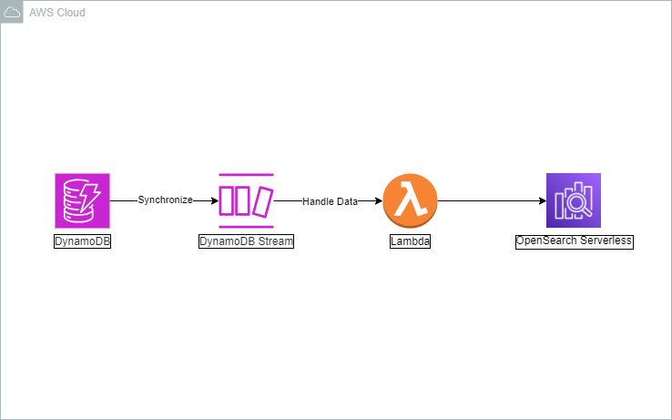
- Create Lambda function
- Go to the AWS Lambda Console
- Select Functions
- Click Create function
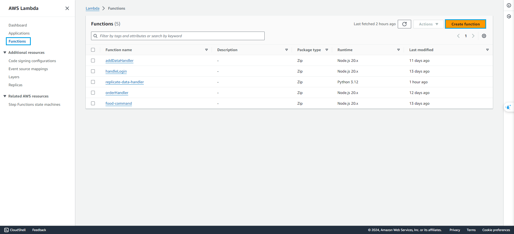
- In Create function step
- Select Author from scratch
- At Runtime, select Python 3.12 (newest version)
- Enter
sync-data-with-dynamodb-stream
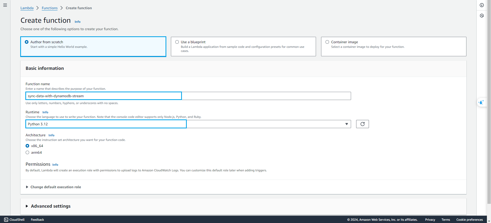
- At Change default execution role, choose Use an existing role
- Select lambda-lab-role
lambda-lab-role is the IAM Role that we are created in the previous step
- Click Create function

-
Click Upload and choose the file that you downloaded, then proceed to upload it
In DynamoDB stream, event will have three types are: INSERT, REMOVE and MODIFY
- Turn on Dynamodb Stream
To synchronize data with DynamoDB Stream, we need enable DynamoDB Stream in DynamoDB table
- Go to the AWS DynamoDB Console
- Select Tables
- Click lab-table
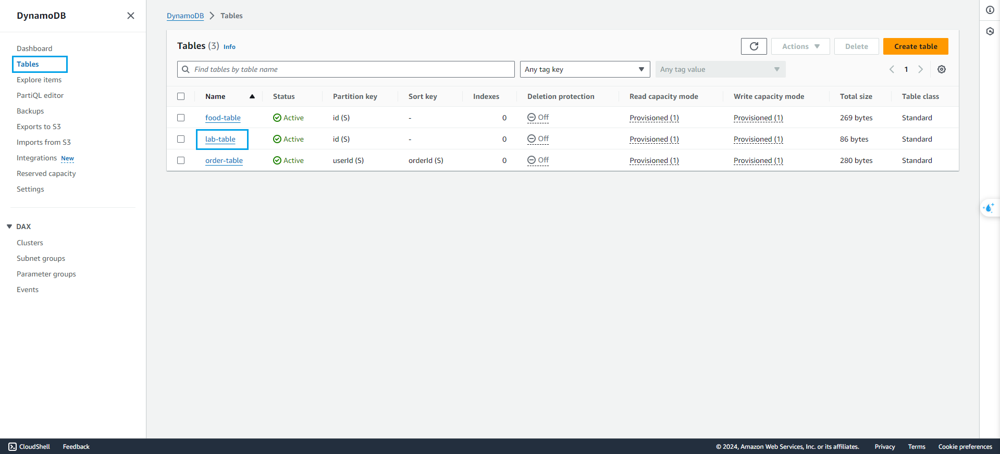
- In lab-table
- Select Exports and Streams
- At DynamoDB stream details, click Turn on
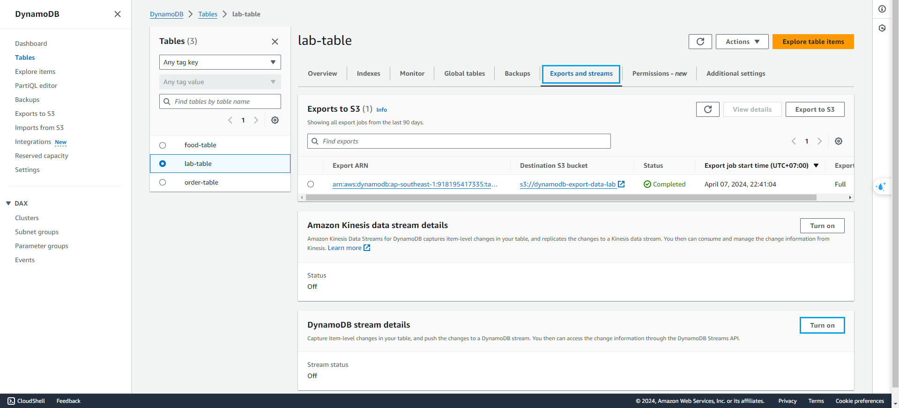
- In Turn on DynamoDB stream
- Select New image
- Click Turn on stream
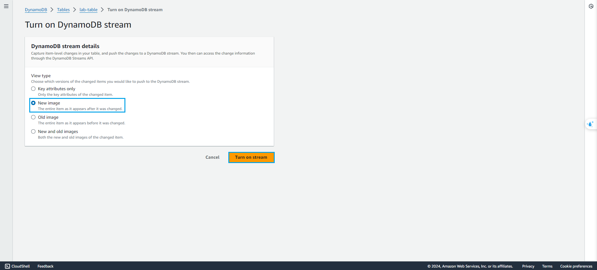
Now, after Turn on stream, we need to create a lambda function to receive record that triggered from DynamoDB stream, but before do that, we need edit lambda-lap-role to allow lambda create received record from DynamoDB stream.
- Go to the AWS IAM Console
- Select Roles
- Search and select 006-editlambdarole.png
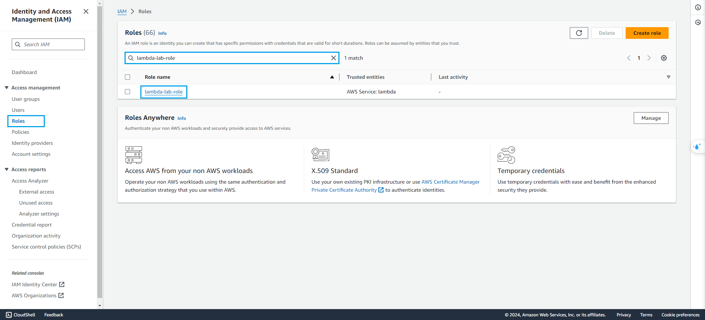
- In lambda-lap-role
- Click Add permissions
- Click Create inline policy
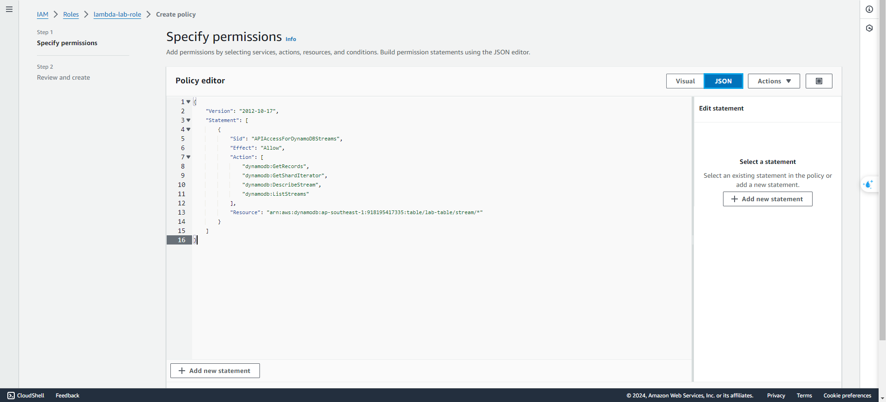
- In Specify permissions step
- Click Json
- Coppy and paste
{
"Version": "2012-10-17",
"Statement": [
{
"Sid": "APIAccessForDynamoDBStreams",
"Effect": "Allow",
"Action": [
"dynamodb:GetRecords",
"dynamodb:GetShardIterator",
"dynamodb:DescribeStream",
"dynamodb:ListStreams"
],
"Resource": "arn:aws:dynamodb:<aws-region>:<aws-account-id>:table/<dynamodb-table-name>/stream/*"
}
]
}
- Scroll down and lick Next
- In Review and create
- Enter
dynamodb-stream-data - Click Create policy
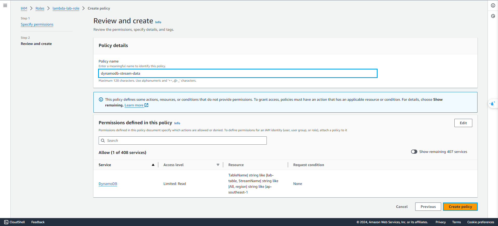
- After create
dynamodb-stream-data, we need createaoss-policywith policy like this
{
"Version": "2012-10-17",
"Statement": [
{
"Effect": "Allow",
"Action": [
"aoss:APIAccessAll",
"aoss:DeleteCollection",
"aoss:*"
],
"Resource": "*"
},
{
"Sid": "VisualEditor1",
"Effect": "Allow",
"Action": "aoss:DashboardsAccessAll",
"Resource": "*"
}
]
}
- After update IAM Role, we will go back to the AWS DynamoDB Console
- Select Exports and Streams
- Scroll down and click Create trigger
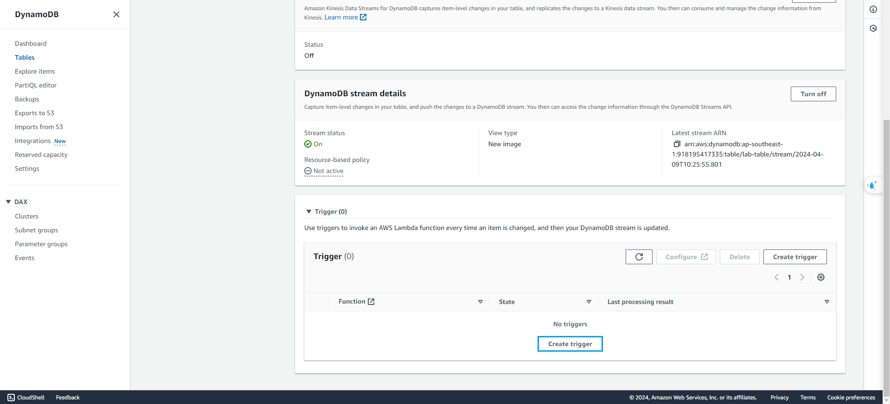
- In Create a trigger step
- Select sync-data-with-dynamodb-stream
- Click Create trigger
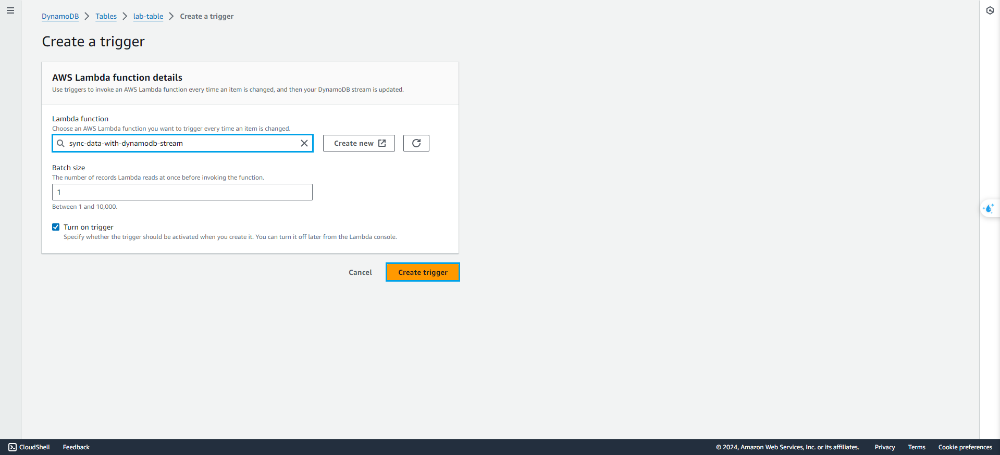
Before perform testing, we need to create Environment Variable as the previous step - when we create Replicate Lambda function
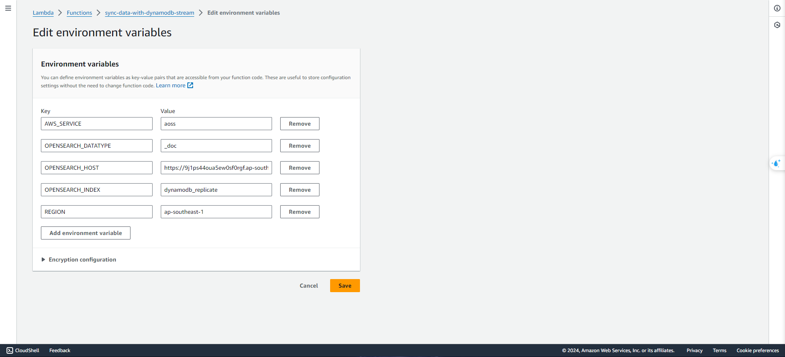
To testing DynamoDB stream pipeline, we will go to the AWS API Gateway Console
- Select APIs
- Select dynamodb-api-gw
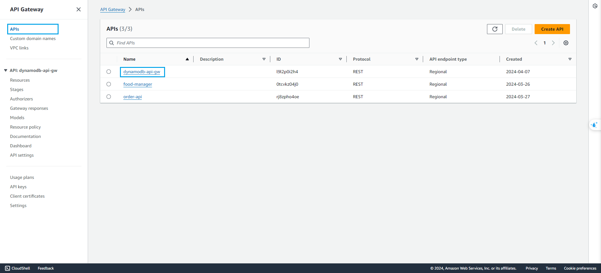
- In dynamodb-api-gw
- Select POST
- Select Test
- At Request body, paste
{
"name": "Test DynamoDB Stream Pipeline",
"type": "Test"
}
- Scroll down and click Test
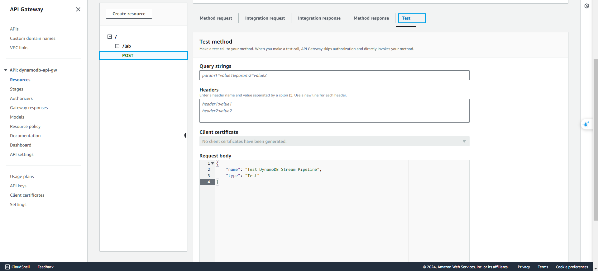
We can verify the successful creation of data. By the way, Go to the AWS Cloud Watch to view log.
CloudWatch enables you to monitor your complete stack (applications, infrastructure, network, and services) and use alarms, logs, and events data to take automated actions and reduce mean time to resolution (MTTR). This frees up important resources and allows you to focus on building applications and business value.
We can see like this:
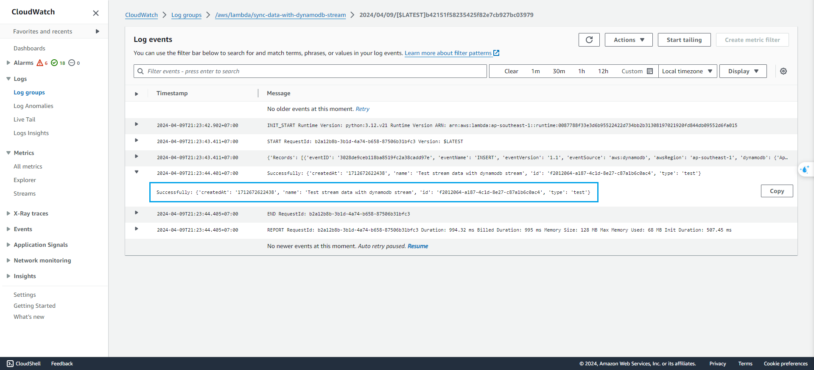
You can also view in DynamoDB table or OpenSearch Serverless Dashboard, you can also perform delete or modify actions to learn more about DynamoDB operations.